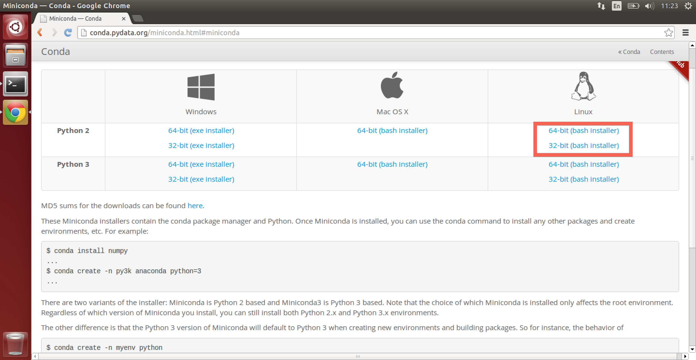

Linux Beginner Installation
It is important to note that as part of the installation, you will be creating an isolated environment to execute Python inside. Make sure that this environment is activated in order to be able to use Menpo!
The installation instructions are split up in to a number of sections. Please follow them carefully, in order:
- Prerequisites
- Install A Python Environment
- Using Conda
- Setting Up A Fresh Environment
- Installing The Menpo Project Into Conda
- Begin Using Menpo
1. Prerequisites
First, we need to install an isolated Python environment. Python does not come with a graphical user interface and so we will need to run a number of commands in the terminal. You can access the terminal by pressing the Super key to open the Dash and searching for terminal.

We need to make sure you install the correct software for your architecture (32-bit or 64-bit). If you are unsure what version of Ubuntu you are running, you can find out by running the following command in a terminal:
$ uname -m
This will output a short string that tells you what version of Linux you are using.
2. Install A Python Environment
The Python environment we will use is called conda, and it is provided by an installation package called Miniconda.
Download either the Python 2 or Python 3 copy of Miniconda for your architecture of Ubuntu (32-bit or 64-bit).

After downloading Miniconda, you need to change to that directory within a
terminal so that we can run the installation shell script. Assuming that your
browser downloaded the script to ~/Downloads, you can start the installer
by running:
$ cd ~/Downloads
$ chmod +x Miniconda2-latest-Linux-x86_64.sh
$ ./Miniconda2-latest-Linux-x86_64.sh
The name of the Miniconda may be different, but you just need to run chmod
in order to make the script executable. Once the installation has begun, accept
the license terms when prompted by typing yes and press Enter to accept
the default installation location. It is important that you say yes when
prompted whether or not the installer should prepend the Miniconda install
location to your PATH:

3. Using Conda
After installing Miniconda, close your current terminal and open another in
order to activate the installation. You should have access to a new command
within the terminal, conda. You can test this is working by entering the
command
$ conda -V
Which will print something like conda 3.17.0, though the version number may
differ.
4. Setting Up A Fresh Environment
We now need to create an environment to store all of our Python packages inside.
It doesn't matter what path you are within the terminal, the
conda command will not create any files locally. So, we use the command
$ conda create -n menpo python
This will inform you that you are creating a new environment and installing
Python inside of it. The environment name is given by -n menpo (the
environment will be called menpo) and only python and it's direct
dependencies will be installed inside by default.
To ensure you want to continue, Conda will prompt you
about if you wish to proceed. Type y and Enter to continue.
Conda will create a new environment for you and give you some information
about activating your new environment called menpo.

Now, activate the menpo environment with the command:
$ source activate menpo

Notice that the terminal is now prefixed with a label:
(menpo)$
This let's you know that the menpo environment is enabled. It is important
to ensure that the menpo environment is activated before attempting to
use Menpo in any way!
5. Installing The Menpo Project Into Conda
Installing all the packages of the Menpo Project only requires a single command:
(menpo)$ conda install -c menpo menpoproject
This will install menpo, menpofit, menpodetect, menpowidgets and menpocli.
If you do not need all Menpo packages, you can explicitly install any of them as:
(menpo)$ conda install -c menpo menpo
(menpo)$ conda install -c menpo menpofit
(menpo)$ conda install -c menpo menpodetect
(menpo)$ conda install -c menpo menpowidgets
(menpo)$ conda install -c menpo menpocli
(menpo)$ conda install -c menpo menpo3d
Conda will then attempt to install all of our requirements. It appears there are many, but this is due to the minimal nature of the environment we originally created. As before, Conda will prompt you to proceed, type y and press Enter to continue.

It may take a short time to download and install all of Menpo's dependencies, during which you will see a number of progress bars. The command is complete when the extracting and linking processes show COMPLETE.

Congratulations! You have now installed the latest version of the Menpo Project!
6. Begin Using Menpo
In order to start using Menpo, we suggest you have a look through our collection of Examples using Jupyter notebook. Follow the instructions there to download the notebooks and run them.
We strongly advise you to read the User Guides for all the packages in order to understand the basic concepts behind the Menpo Project. They can be found in:
If you need more help you can always ask on the menpo-users mailing list.